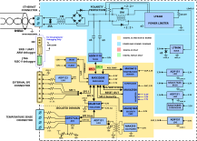

AD-ETHERNETAPLDEVICE-SL
Ethernet-APL Field Platform for Intelligent, Secure, and Connected Industrial Devices.
Introduction
The AD-ETHERNETAPLDEVICE-SL is a complete Ethernet-APL field platform designed for prototyping intelligent, secure, and connected industrial field devices.
Key Features
Certified for intrinsic safety (Ex ia IIC Ga)
Pre-certified Ethernet-APL
Functional safety ready (SIL2) with:
MAX42500 voltage monitor with integrated windowing watchdog
MAX66132 temperature sensor
ADFS7124-4 sigma-delta ADC (SC3 certified)
Complete FMEDA documentation
MAX32690 dual-core MCU (ARM Cortex-M4 with FPU + RISC-V co-processor)
External RAM (512 Mb) and Flash (64 Mb)
MAXQ1065 security co-processor for:
Root-of-trust
Mutual authentication
Data confidentiality and integrity
Secure boot and communications
10BASE-T1L Ethernet via ADIN1110 MAC/PHY
Powered via Single-Pair Power over Ethernet (SPoE), :adi:` ADIN1100D2Z` recommended
Open-source software stack with drivers and example applications
Zephyr RTOS support and integration with Code Fusion Studio

{kind=link}

Hardware Design Files
Package Contents
The development kit is delivered with a set of accessories required to put the system together and get it up and running in no time.
This is what you’ll find in the development kit box:
1x AD-EthernetAPLDevice-SL intrinsic safety certify kit (Power and Comms + Digital IS boards)
1x Digital NON-IS board. This board is not IS certify and enables access to the RISC-V JTAG for debugging purposes (Digital NON-IS board)
1x MAX32650PICO programmer (ARM) + cable
1x OLIMEX programmer (RISC-V)
1x OLIMEX adapter + cable
Application Development

The AD-ETHERNETAPLDEVICE-SL firmware examples are based on ADI’s open-source no-OS framework. It includes the bare-metal device drivers for all the components in the system as well as example applications enabling connectivity via the 10BASE-T1L interface for system configuration and data transfer.
Additionally, a proprietary PROFINET stack software application is available to enable easy evaluation and system prototyping (https://myanalog.com registration required).
The board is fully supported in Code Fusion Studio {{ soon to be available }}
Hardware Components and Connections


Digital IS Board Connections

Digital NON-IS Board Connections
Hardware Setup
Required Hardware
Development kit: AD-EthernetAPLDevice-SL
Debugging board: If RISC-V co-processor needs to be debugged, replace the IS digital board with the NON-IS Digital board
Power supply: Single-Pair Power over Ethernet (SPoE) via DEMO-ADIN1100D2Z supplied from external power connector (from 9V to 15V), or a Ethernet-APL field switch
ARM programmer: MAX32625PICO or any SWD-compatible programmer
RISC-V programmer: Olimex ARM-USB-OCD
Media converter: 10BASE-T1L to 10BASE-T or similar. DEMO-ADIN1100D2Z includes a media converter and can be used for both power and data, or a Ethernet-APL field switch
Setup Instructions
Connect the AD-EthernetAPLDevice-SL to the DEMO-ADIN1100D2Z and ensure all connectors are fully seated.
Connect a 2- or 4-wire PT100 sensor to the temperature connector.
Attach the MAX32625PICO programmer to the ARM debug header using the 10-pin ribbon cable.
For RISC‑V debugging, install the NON‑IS digital board and connect the RISC‑V debug probe to the RISC‑V JTAG header (available only on the NON‑IS board).
Connect the DEMO-ADIN1100D2Z to your PC via Ethernet.
Apply power to the DEMO-ADIN1100D2Z (9V to 15V input). The AD-EthernetAPLDevice-SL will be powered via SPoE.

Software Setup
Programming the AD-EthernetAPLDevice-SL
The AD-EthernetAPLDevice-SL is supported by an open-source software stack based on Analog Devices’ no-OS framework. It includes:
Baremetal drivers for all on-board components
Example applications for data acquisition and system configuration via 10BASE-T1L
Zephyr RTOS board definition
Integration with Code Fusion Studio
For a complete experience, download latest Code Fusion Studio from here.
The software stack includes:
no-OS drivers and HAL
Example applications for ADCs, DACs, sensors
UART and Ethernet (10BASE-T1L) communication support
Secure boot and authentication via MAXQ1065
Zephyr RTOS support
Complementary Documentation
Help and Support
For questions and more information, please visit the EngineerZone community or contact your local ADI representative.